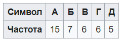
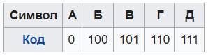

Алгоритм Хаффмана
Алгоритм Хаффмана — алгоритм оптимального префиксного кодирования алфавита с минимальной избыточностью. Был разработан в 1952 году аспирантом Массачусетского технологического института Дэвидом Хаффманом при написании им курсовой работы. В настоящее время используется во многих программах сжатия данных. В отличие от алгоритма Шеннона — Фано, алгоритм Хаффмана остаётся всегда оптимальным и для вторичных алфавитов m2 с более чем двумя символами. Этот метод кодирования состоит из двух основных этапов:
1 Построение оптимального кодового дерева.
2 Построение отображения код-символ на основе построенного дерева.
Один из первых алгоритмов эффективного кодирования информации был предложен Д. А. Хаффманом в 1952 году. Идея алгоритма состоит в следующем: зная вероятности появления символов в сообщении, можно описать процедуру построения кодов переменной длины, состоящих из целого количества битов. Символам с большей вероятностью ставятся в соответствие более короткие коды. Коды Хаффмана обладают свойством префиксности (то есть ни одно кодовое слово не является префиксом другого), что позволяет однозначно их декодировать.
Классический алгоритм Хаффмана на входе получает таблицу частот встречаемости символов в сообщении. Далее на основании этой таблицы строится дерево кодирования Хаффмана (Н-дерево).
Символы входного алфавита образуют список свободных узлов. Каждый лист имеет вес, который может быть равен либо вероятности, либо количеству вхождений символа в сжимаемое сообщение. Выбираются два свободных узла дерева с наименьшими весами. Создается их родитель с весом, равным их суммарному весу. Родитель добавляется в список свободных узлов, а два его потомка удаляются из этого списка. Одной дуге, выходящей из родителя, ставится в соответствие бит 1, другой — бит 0. Битовые значения ветвей, исходящих от корня, не зависят от весов потомков. Шаги, начиная со второго, повторяются до тех пор, пока в списке свободных узлов не останется только один свободный узел. Он и будет считаться корнем дерева. Допустим, у нас есть следующая таблица частот:

Этот процесс можно представить как построение дерева, корень которого — символ с суммой вероятностей объединенных символов, получившийся при объединении символов из последнего шага, его n0 потомков — символы из предыдущего шага и т. д.
Чтобы определить код для каждого из символов, входящих в сообщение, мы должны пройти путь от листа дерева, соответствующего текущему символу, до его корня, накапливая биты при перемещении по ветвям дерева (первая ветвь в пути соответствует младшему биту). Полученная таким образом последовательность битов является кодом данного символа, записанным в обратном порядке. Построение дерева для данного примера.
Для данной таблицы символов коды Хаффмана будут выглядеть следующим образом.

Поскольку ни один из полученных кодов не является префиксом другого, они могут быть однозначно декодированы при чтении их из потока. Кроме того, наиболее частый символ сообщения А закодирован наименьшим количеством бит, а наиболее редкий символ Д — наибольшим.
При этом общая длина сообщения, состоящего из приведённых в таблице символов, составит 87 бит (в среднем 2,2308 бита на символ). При использовании равномерного кодирования общая длина сообщения составила бы 117 бит (ровно 3 бита на символ). Заметим, что энтропия источника, независимым образом порождающего символы с указанными частотами, составляет ~2,1858 бита на символ, то есть избыточность построенного для такого источника кода Хаффмана, понимаемая как отличие среднего числа бит на символ от энтропии, составляет менее 0,05 бит на символ.
Классический алгоритм Хаффмана имеет ряд существенных недостатков. Во-первых, для восстановления содержимого сжатого сообщения декодер должен знать таблицу частот, которой пользовался кодер. Следовательно, длина сжатого сообщения увеличивается на длину таблицы частот, которая должна посылаться впереди данных, что может свести на нет все усилия по сжатию сообщения. Кроме того, необходимость наличия полной частотной статистики перед началом собственно кодирования требует двух проходов по сообщению: одного для построения модели сообщения (таблицы частот и Н-дерева), другого для, собственно, кодирования. Во-вторых, избыточность кодирования обращается в ноль лишь в тех случаях, когда вероятности кодируемых символов являются обратными степенями числа 2. В-третьих, для источника с энтропией, не превышающей 1 (например, для двоичного источника), непосредственное применение кода Хаффмана бессмысленно.